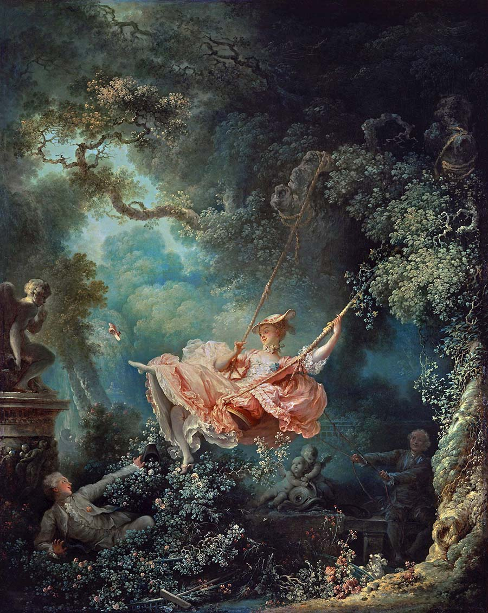

English 1100ENGL 1100 —
Community Advocacy Project
Alexander Rice

This is an image on a website.
There are hundreds of billions, or even trillions of images on the web, with 3.2 billion images uploaded to the internet every day Firth, 2024. If you spent 1 second per image, looking at every image uploaded to the internet yesterday, it would take you over 100 years to look at them all.
The image above is The Swing by French painter Jean-Honoré Fragonard Fragonard, 1767. The painting is described by 1700s art specialist Dr. Ashley Bruckbauer like this:
Inside a lush garden, a young woman in a billowing pink gown glides through the air. Her suspension high above the ground is enabled by a swing consisting of a crimson velvet cushioned seat and a pair of ropes tied around the knobby branches of an enormous tree. On the far right, an older man seated on a stone bench helps operate the device. Using a series of connected ropes, he pulls the swing back to create the momentum necessary to propel the woman forward. As he releases the ropes, she leans back and extends her legs, expelling a tiny pink slipper from her pointed foot. The dainty shoe flies through the air toward a marble statue on the far left. At the base of the large pedestal supporting this sculpture lies a young man. Partially hidden by an overgrown rose bush, he peers wide-eyed up the open skirt of the swinging woman. Bruckbauer
Notice the blue tones mixed into the greens of the bushy leaves. Note the sense of curiosity on the statues’ faces, the gnarled tree trunk overridden with vines, and how dress feels in a state of motion. You could spend hours looking into Fragonard’s work, discovering new details.
But not if you’re visually impaired.
If you’re a blind user relying on tools such as screen readers to view this webpage, you only know this image as “Image, The_Swing_(P430).jpg.” By default, some screen readers will read the image’s file name if the image isn’t described by “alt text”, additional metadata that describes an image to screenreaders or displays on a page if the image fails to load.
Social Media
Most of the 3.2 billion images uploaded each day are on social media platforms. Social Media is where many people spend hours every day, but most social media platforms are very visual heavy, with people sharing images and videos. Where are blind people supposed to go?
While social media sites may allow users to add captions and assistive text to their posts, a 2019 study found that on Twitter, only 0.1% of over 1 million tweets included alt text, making the platform a desert to those who rely on assistive technology Synaptiq, 2022.
It may or may not surprise you that the platforms blind people gravitate to are the same as sighted people. In a systemic review conducted at the University of Macedonia, Facebook is the most popular social media platform among blind users, followed by Twitter, YouTube, WhatsApp, LinkedIn, and Instagram Gkatzola, 2023.
Facebook has earned that top spot. Besides hosting the largest number of users of any social media platform in the world which would naturally predicate it, it has dedicated itself more than perhaps any other platform to accessibility for blind users. It explicitly supports the VoiceOver, El Capitan, JAWS and NVDA screen readers while offering customer support for others Facebook, 2025, it supports voice-to-text applications such as Dragon, and in 2017, it pioneered the internet in Automatic Alternative Text (AAT) which uses object-recognition technology and machine learning to write alt text for images posted to its site.
This should sound like a win, right? Image recognition and machine learning has come a long way over the last 8 years and AI-based tools are penetrating every industry under the sun. Surely these tools will fix the issue once and for all?
Sadly, that isn’t the case. While these tools are undeniably beneficial toward making the internet more accessible to blind users, there are fatal flaws. Besides recognizing what objects are in an image, a good description needs to know what objects are most important to the image and what the image is intended to communicate. Machine-learning tools can accurately answer the “what”, but not always the “how”, and “why”s. In 2021, Facebook came under scrutiny when its machine-learning algorithms mislabelled a video featuring a black man as “about Primates”, raising concerns about racism in AI Synaptiq, 2022.
So What Can you Do?
Facebook, Instagram, Twitter, and LinkedIn all have some mechanism to generate alt text, but allow users to write their own alt text. Pinterest, TikTok, Threads, Bluesky, and other platforms won’t auto-generate alt text, but allow users to submit their own.
You should always write your own alt text if you’re given the ability to. If you aren’t given the ability to, consider posting the image with a meaningful caption. Your social media platform may have settings to remind you to use alt text. Bluesky, for instance, has a setting titled “Require alt text before posting” that won’t allow you to submit an image if you’ve forgotten it.
As a bonus, the International Association of Accessibility Professionals notes that writing alt text on all images posted to social media helps brands gain more traction from search engines. If you’re trying to gain a larger following, writing alt text will make you more visible and make your content more accessible as well IAAP, 2022. A win-win!
Writing Alt Text
WebAIM are an authority in web accessibility. They set guidelines for how to implement international accessibility standards. On their guide to writing alternative text, they have some examples:
As the first Hispanic woman to go to space, and, later, the first Hispanic director of Johnson Space Center, Ellen Ochoa is widely regarded as a role model.
What would you choose as alt text for the image in Example 1?
“Astronaut Ellen Ochoa”
“Image of Ellen Ochoa, Astronaut”
“Ellen Ochao, the first Hispanic woman to go into space”
No alt Text
WebAIM, 2021
WebAIM notes that A is the correct answer.
B is redundant because screen readers already mention that it is an image, so it would read “Image, Image of Ellen Ochoa, Astronaut”. C includes information that can’t be seen in the image, which is bad practice. You should only include content that can’t be seen in the image if it clears up confusion. If the caption beside the image started with “Astronaut Ellen Ochoa”, it would have been acceptable to provide no alt text to avoid redundancy.
In this painting, the artist Emanuel Leutze used light, color, form, perspective, proportion, and motion to create the composition.
What alt text would you choose for the image in Example 7?
“George Washington”
“Painting of George Washington”
“Painting of George Washington crossing the Delaware River”
“A classic painting demonstrating the use of light and color to create composition.”
“Painting of George Washington crossing the Delaware River. Swirling waves surround the boat where the majestic George Washington looks forward out of the storm and into the rays of light across the river as he leads his wary troops to battle.”
WebAIM, 2021
WebAIM presents this as a trick question. Depending on the context, any of these alt texts would be appropriate, though they note that A and B are likely insufficient to be considered “equivalent” information to the image. C is acceptable because many sighted users would be able to recognize this famous painting based on just the description “Painting of George Washington crossing the Delaware River.” D is acceptable if the focus of the article this image was shared on is the artistic techniques used.
Overall, alt text should:
Be an accurate and equivalent representation of the image.
Be succinct without sacrificing accuracy.
Not be redundant with text immediately beside the image.
Avoid phrases like “image of”.
In Conclusion
It’s easy for sighted people to post images on the internet without thinking about how a blind or visually impaired person might see it. While machine-learning and AI based tools are making the web more open and accessible for blind people, there are major flaws with such tools and they may never be equal to a human touch.
Writing alt text for images you post to social media is a good skill to learn and only requires a few simple guidelines.
Now that you've read this paper, click below to see how a screen reader would have read it:
Fragonard, Jean-Honoré. (1767).
The Swing [Oil on canvas].
Wallace Collection, London.
Photo by Steven Zucker, CC BY-NC-SA 2.0
Gkatzola, K., & Papadopoulos, K. (2023).
Social media actually used by people with visual impairment: A scoping review.
British Journal of Visual Impairment, 42(3), 832-848. https://doi.org/10.1177/02646196231189393
 Alexander Rice
Alexander Rice